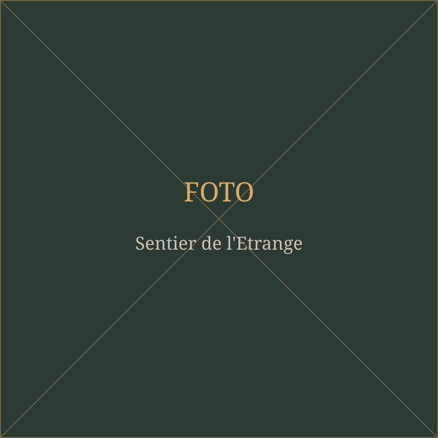
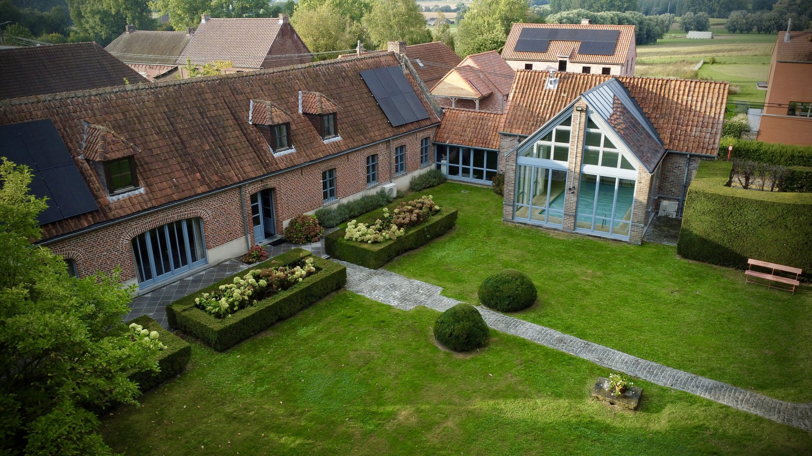
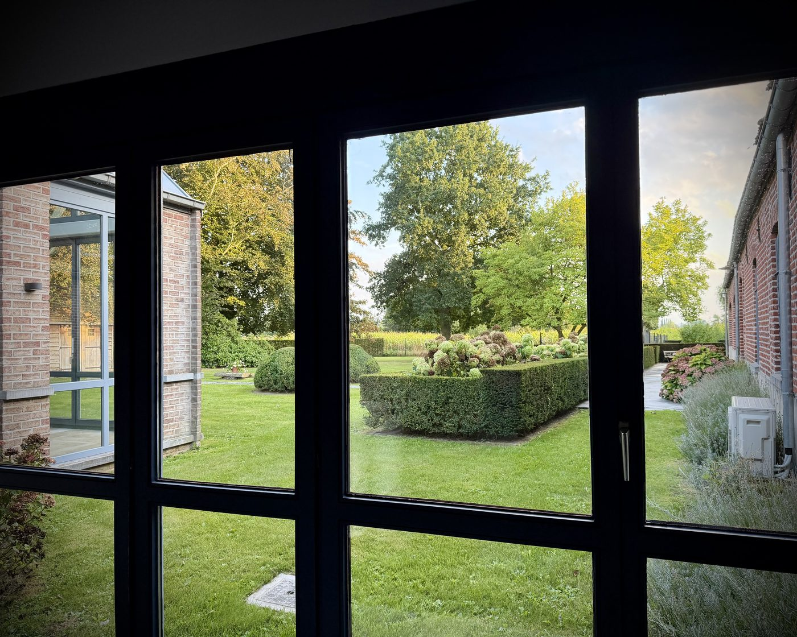
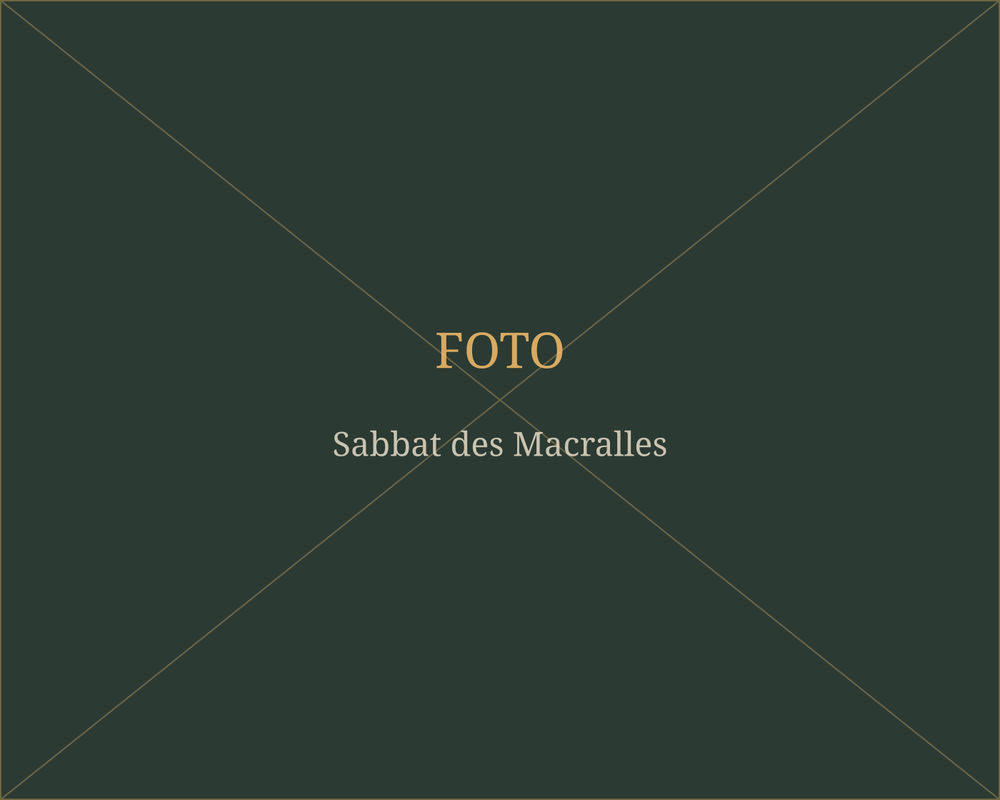
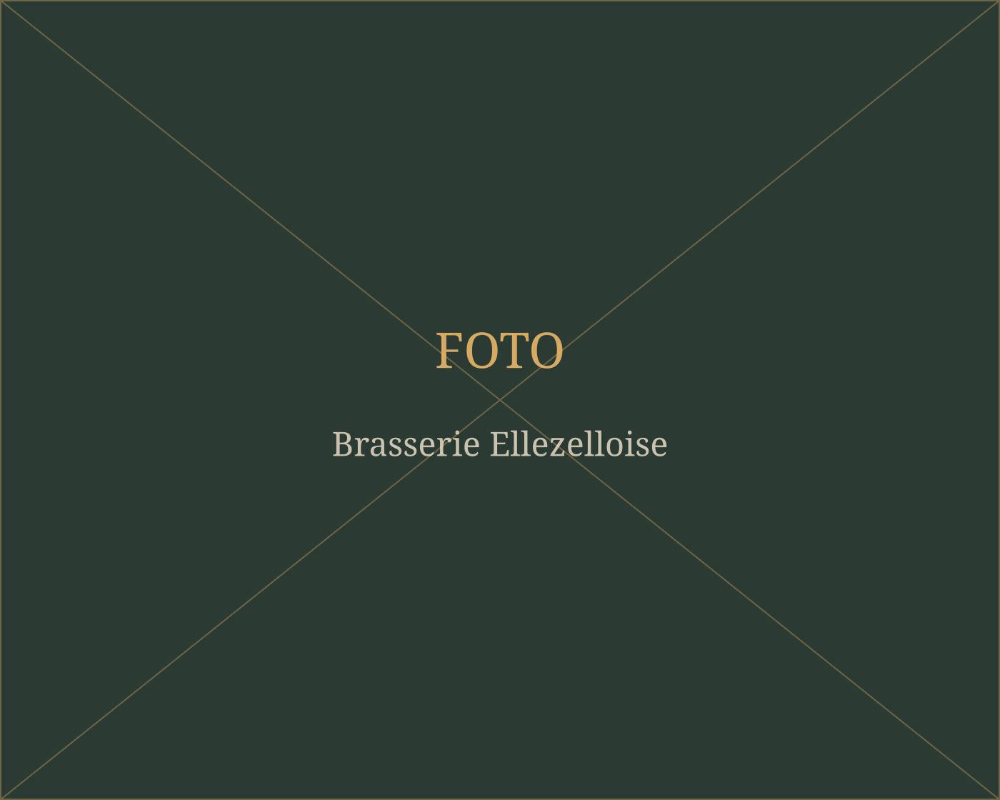
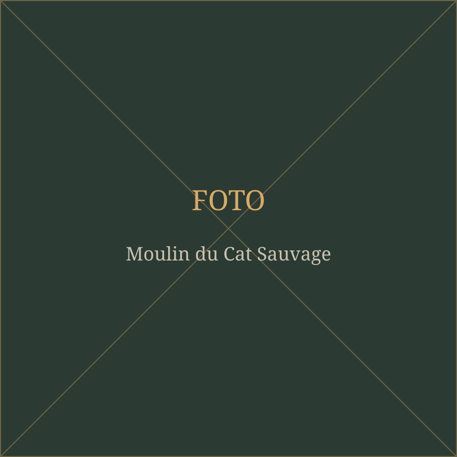
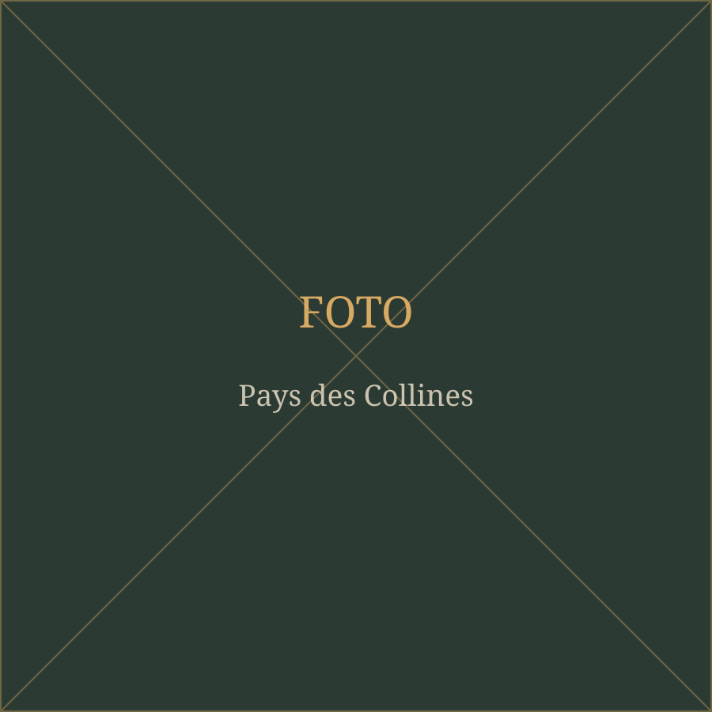

Sentier de l'Étrange
Wandelpad langs de vreemdste plekken en verhalen van het dorp.

Ellezelles — in het Nederlands Elzele — ligt in het noorden van Henegouwen, vlak tegen de taalgrens. Het dorp maakt deel uit van het Pays des Collines, het Land van de Heuvels: een golvend landschap van weiden, hoeves, holle wegen en boomgaarden dat naadloos overgaat in de Vlaamse Ardennen.
Het is een streek om traag te nemen. Geen files, geen drukte — wel uitzichten tot ver over de heuvelrug, dorpscafés waar het bier van om de hoek komt, en verhalen die hier al eeuwen meegaan.

Vanaf de voordeur loopt u zo de velden in. Het Pays des Collines is dooraderd met bewegwijzerde wandel- en fietslussen, van korte dorpswandelingen tot dagtochten over de heuvelkammen.
Fietsers zitten hier goed: de hellingen en kasseistroken van de Vlaamse Ardennen — het terrein van de Ronde van Vlaanderen — liggen nauwelijks een half uur verderop. En wie het rustiger wil, volgt gewoon de knooppunten door de valleien.
Vraag ons naar de mooiste routes
Ellezelles staat in Wallonië bekend om zijn macralles: heksen. Elk jaar in juni wordt dat gevierd met de Sabbat des Macralles, een avondlijke stoet en spektakel in het dorpscentrum.
Wie het hele jaar door iets van die sfeer wil opsnuiven, volgt het Sentier de l'Étrange, een wandelpad langs plekken waar volksverhalen en bijgeloof aan vasthangen.
En dan is er nog Ellezelles' eigenzinnigste claim: het dorp roept zichzelf uit tot geboorteplaats van Hercule Poirot, de Belgische speurder van Agatha Christie — compleet met geboorteakte en gedenkteken.

Wandelpad langs de vreemdste plekken en verhalen van het dorp.

De dorpsbrouwerij in een oude hoeve, bekend van de Quintine en de Hercule Stout.

De windmolen op de heuvel, een van de blikvangers van de gemeente.

Bezoekerscentrum met kaarten, routes en uitleg over de streek.
Ellezelles ligt centraal genoeg om er veel op één dag bij te nemen, en afgelegen genoeg om er echt weg te zijn.
Afstanden bij benadering, met de wagen.
Wandelen, fietsen, proeven en niets moeten. Boek de woning en ontdek het Pays des Collines op uw eigen tempo.
Boek uw verblijf